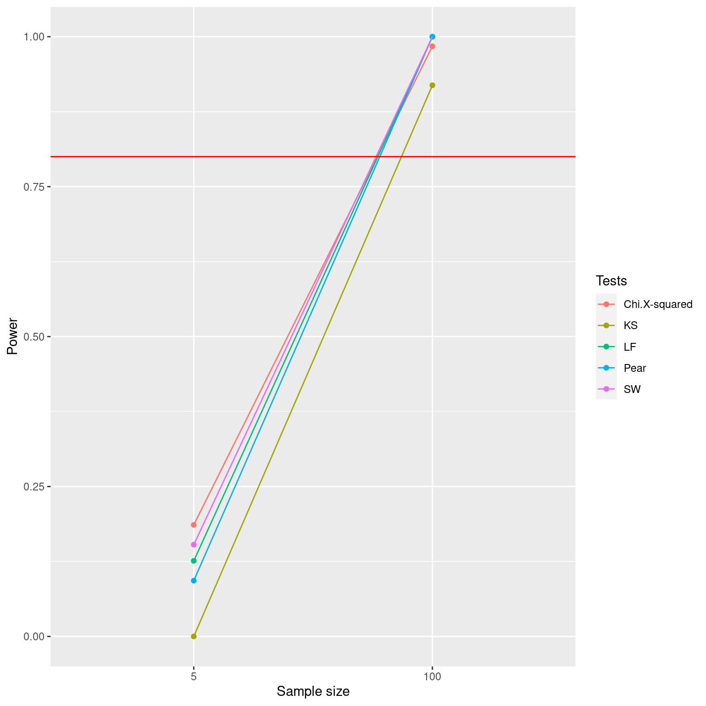

library(nortest)
library(tidyverse)
# function that runs the tests
find_pvalues =function(n,typedist,...){
x = typedist(n,...) # data
sw = shapiro.test(x) # shapiro-wilk test
ks = ks.test(x,'pnorm',mean(x),sd(x)) # k-s test
lf = lillie.test(x) # lilliefors test
pr = pearson.test(x,adjust = TRUE)
h=hist(x,nclass = ceiling(2 * (n^(2/5))),plot=FALSE)
ob=h$counts
xv=h$breaks
pj = c(pnorm(xv[2],mean(x),sd(x)),
diff(pnorm(xv[2:(length(xv)-1)],mean(x),sd(x))),
pnorm(xv[length(xv)-1],mean(x),sd(x),lower.tail = F))
chi = chisq.test(ob,p = pj) # chi-square test
# need to adjust df
p_val = pchisq(chi$statistic,ceiling(2 * (n^(2/5)))-3,lower.tail = F)
pvalues = c(SW = sw$p.value < 0.05,
KS = ks$p.value< 0.05,
LF = lf$p.value < 0.05,
Chi = p_val < 0.05,
Pear = pr$p.value < 0.05)
return(pvalues)
}
# n values : sample sizes
n_values= c(5,10,20,40,80,160,320,1000)
# find p_values for different sample sizes
p_val = map_df(n_values,find_pvalues,rt,4)
# repeat 1000 times
results_t = replicate(1000,map(n_values,find_pvalues,rt,4))
results_exp = replicate(1000,map(n_values,find_pvalues,rexp,1))
results_chi = replicate(1000,map(n_values,find_pvalues,rchisq,3))
results_unif = replicate(1000,map(n_values,find_pvalues,runif,0,1))
# better results format
df.results_t = bind_rows(results_t) %>%
mutate(n=gl(n = length(n_values),k=1,length = length(results_t),labels = n_values),dist="t4")
df.results_exp = bind_rows(results_exp) %>%
mutate(n=gl(n = length(n_values),k=1,length = length(results_exp),labels = n_values),dist="exp1")
df.results_unif = bind_rows(results_unif) %>%
mutate(n=gl(n = length(n_values),k=1,length = length(results_unif),labels = n_values),dist="unif01")
df.results_chi = bind_rows(results_chi) %>%
mutate(n=gl(n = length(n_values),k=1,length = length(results_chi),labels = n_values),dist="chi3")
df_power_sim = rbind(df.results_t,df.results_exp,df.results_chi,df.results_unif)
# compute the power
power_tests = df_power_sim %>%
group_by(dist,n) %>%
summarise_all(mean,na.rm=TRUE)
power_tests# A tibble: 32 × 7
# Groups: dist [4]
dist n SW KS LF `Chi.X-squared` Pear
<chr> <fct> <dbl> <dbl> <dbl> <dbl> <dbl>
1 chi3 5 0.108 0 0.088 0.191 0.058
2 chi3 10 0.314 0.003 0.21 0.264 0.294
3 chi3 20 0.646 0.009 0.384 0.478 0.412
4 chi3 40 0.944 0.086 0.718 0.748 0.732
5 chi3 80 1 0.395 0.978 0.944 0.985
6 chi3 160 1 0.915 1 1 1
7 chi3 320 1 1 1 1 1
8 chi3 1000 1 1 1 1 1
9 exp1 5 0.168 0 0.135 0.191 0.097
10 exp1 10 0.431 0.001 0.263 0.237 0.375
# … with 22 more rows# plot the power
power_tests %>%
pivot_longer(cols = -c("n","dist"), names_to = "test", values_to = "power") %>%
ggplot(aes(x=n,y=power,group=test,col=test)) +
geom_point()+
geom_line()+
geom_hline(yintercept = 0.8,col="red")+
facet_wrap(~dist)+
labs(x="Sample size",y="Power")+
scale_color_discrete(name="Tests")